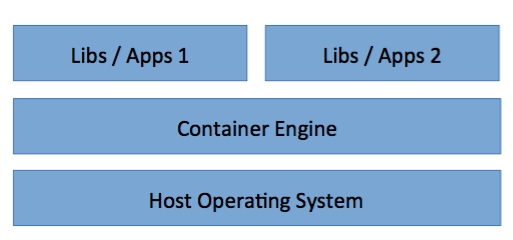

The user interface of a VMM (VMWare Fusion)
The user interface of a VMM (VMWare Fusion)Virtual machine monitor / Hypervisor
The virtualisation layer between the underlying hardware (e.g. the physical server) and the virtual machines and guest operating systems it supports.
Virtual Machine: A representation of a real machine using hardware/software that can host a guest operating system.
Guest Operating System: An operating system that runs in a virtual machine environment that would otherwise run directly on a separate physical system.
The user interface of a VMM (VMWare Fusion)
A processor in a computer running a typical OS has two different modes: user mode and kernel mode. The processor switches between the two modes depending on what type of code is running on the processor. Applications run in user mode, and core operating system components run in kernel mode. While many drivers run in kernel mode, some drivers may run in user mode.
In Kernel mode, the executing code has complete and unrestricted access to the underlying hardware. It can execute any CPU instruction and reference any memory address. Kernel mode is generally reserved for the lowest-level, most trusted functions of the operating system. Crashes in kernel mode are catastrophic; they will halt the entire PC.
In User mode, the executing code has no ability to directly access hardware or reference memory. Code running in user mode must delegate to system APIs to access hardware or memory. Due to the protection afforded by this sort of isolation, crashes in user mode are always recoverable. Most of the code running on your computer will execute in user mode.


Computer operating systems provide different levels of access to resources. A protection ring is one of two or more hierarchical levels or layers of privilege within the architecture of a computer system. This is generally hardware-enforced by some CPU architectures that provide different CPU modes at the hardware or microcode level. Rings are arranged in a hierarchy from most privileged (most trusted, usually numbered zero) to least privileged (least trusted, usually with the highest ring number). On most operating systems, Ring 0 is the level with the most privileges and interacts most directly with the physical hardware such as the CPU and memory.
'Instructions' means CPU instructions. Please see assembly language to learn more about instructions. Here is the instrction set of x86.
The Intel architecture defines privileged
instructions and sensitive
instructions. The privileged instructions may only be executed when the Current Privilege Level is zero (CPL = 0). Attempting to execute a privileged instruction when CPL != 0 will generate a general protection (GP) exception. Windows traps GP exceptions caused by executing privileged instructions and usually generates an application error.
The sensitive instructions (also called IOPL-sensitive) may only be executed when CPL <= IOPL (I/O Privilege Level). Attempting to execute a sensitive instruction when CPL > IOPL will generate a GP exception. This should usually not cause a fatal error. The Windows Virtual Machine Manager (VMM) traps GP exceptions caused by executing sensitive instructions and (depending on the instruction) either simulates the instruction's behavior in the VM in which the instruction was executed, or dispaches it to a virtual device driver, which simulates the instruction's behavior (trap and emulate).
For any conventional third-generation computer, an effective VMM may be constructed if the set of sensitive instructions for that computer is a subset of the set of privileged instructions.
Some architectures, like the non-hardware-assisted x86, do not meet these conditions, so they cannot be virtualized in the classic way. But architectures can still be fully virtualized (in the x86 case meaning at the CPU and MMU level) by using different techniques like binary translation, which replaces the sensitive instructions that do not generate traps, which are sometimes called critical instructions.
There are three properties of interest when analyzing the environment created by a VMM.
Trap-and-emulate

In full virtualization, the virtual machine simulates enough hardware to allow an unmodified guest
OS (one designed for the same instruction set) to be run in isolation.
In paravirtualization, the virtual machine does not necessarily simulate hardware, but instead (or in addition) offers a special API that can only be used by modifying the guest
OS.
Because the guest OS needs to be modified, usually this kind of virtualization only support to run open source OSes as guest OSes. That's why XEN based VPS providers, such as Linode, only support Linux.
In hardware-assisted virtualization, the hardware provides architectural support that facilitates building a virtual machine monitor and allows guest OSes to be run in isolation.
Requires that all sensitive instructions trappable
Advantages:
Disadvantages:
Trap and execute occurs by scanning guest instruction stream and replacing sensitive instructions with emulated code.
Bare Metal Hypervisor – VMM runs directly on actual hardware (e.g. VMWare ESX Server)
Hosted Virtualisation – VMM runs on top of another operating system

Also called containers
. The kernel of an operating system allows the existence of multiple isolated user-space instances, instead of just one.

Live Migration of Virtual Machines
Know the Difference between VMWare, KVM, OpenVZ, Xen, Virtuozzo
Problems of virtualization: cost resources. The cost in terms of disk and RAM of replicating an entire operating system can be huge.
 Virtualization architecture
Virtualization architecture
 Containerization architecture

If you have to run many applications on the same machine, it is simpler to keep them separated in different containers.
Containers offer a way to isolate applications and related libraries/configurations from each other. This is important because upgrading a single library can cause incompatibilities to appear in apparently unrelated applications.